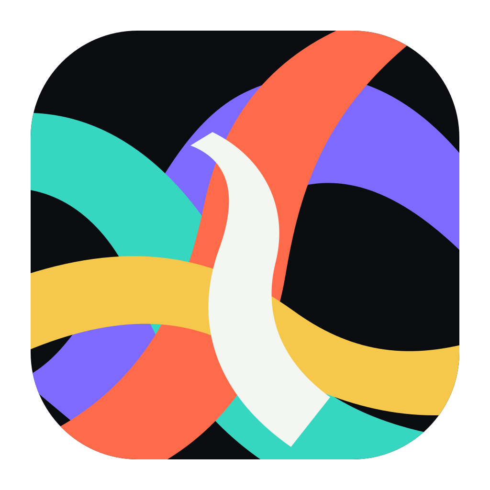

Remember the performance.
The icon comes first. Lightfield is a full-bleed frame of performed light. It is not a letter, a meter, a spectrum, or a diagram of the pipeline.

Lightfield
Five large chromatic planes cross, interrupt, and resolve inside one dark frame. The palette supplies the visual repertoire; the authored composition supplies the orchestration.
Memory targetMusic, performed as light.
16
32
64
128
The Dock test.
The icon must be recalled as a chromatic performance—not decoded as an interface symbol. The surrounding icons are neutral stand-ins used only to test recognition and weight.
What this must prove.
- The planes read as one authored image rather than a logo assembled from symbols.
- The palette remains identifiable at 16 and 32 px.
- The icon has enough visual weight to hold its place in the macOS Dock.
- No wordmark work begins until the icon direction is accepted.